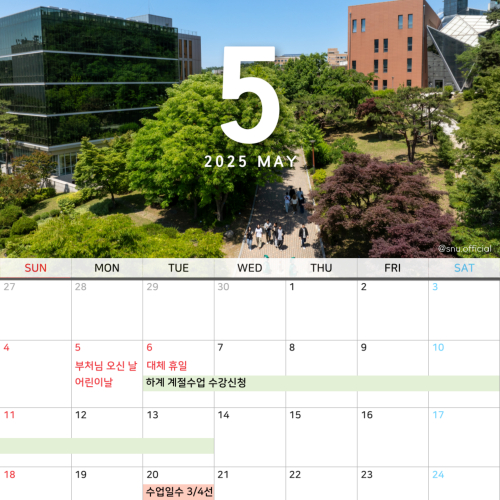
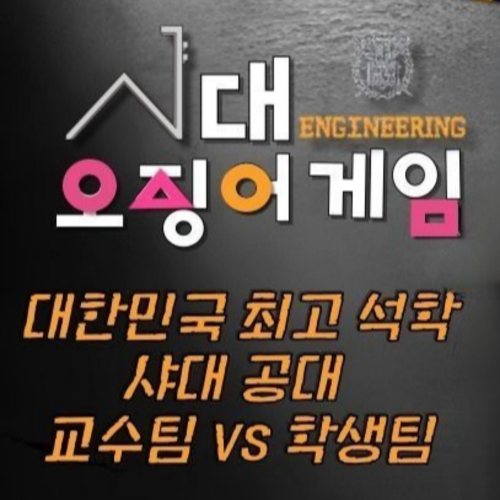

-
 인스타그램
인스타그램서울대 축제, 함께 즐길 준비 되셨나요?
카드뉴스 속 꿀팁들과 함께라면, 이번 축제의 주인공은 바로 당신!
-
 인스타그램
인스타그램비가 와도 굴하지 않는 서울대 러너들!
2025 서울대학교 종합마라톤대회에서 우중 마라톤을 무사히 완주한 여러분, 정말 고생 많으셨습니다!
-
 인스타그램
인스타그램서울대학교 2025 봄축제 〈SNUFESTIVAL: Spring-kle〉
5월 13일(화)-15일(목) 잔디광장&버들골에서 만나요!
-
 인스타그램
인스타그램나… 사실 우리 전공 좋아했나…?
당신의 일상 속, 나도 모르게 불쑥 튀어나오는 ‘전공병 모먼트’를 공유해주세요!
-
인스타그램
제6회 SNU ‘도서관 옆’ 공공미술 프로젝트 작품을 공모합니다!
학부대학이 주관하는 본 프로젝트는, 서울대학교 학생이라면 누구나 개인 또는 팀으로 참여할 수 있습니다. 2개 이상의 단과대 소속으로 구성된 팀, 학부생+대학원생 팀 등 다양한 형태의 참가를 환영합니다! 최종 선정된 작품은 학부대학과 중앙도서관 사이 공간에 전시될 예정이니 많은 참여 부탁드립니다!
-
유튜브
[서막] 샤대에 오징어게임이? 한날한시에 잡혀간 그들
서울대 공대의 ‘샤대 오징어게임’!
-
 인스타그램
인스타그램이동 약자를 위한 계단 정복 활동
지난해 12월, BBC ‘올해의 여성 100인’에 선정된 ‘계단뿌셔클럽’ 박수빈 대표는 이동 약자가 언제든지 ‘편리하게 쓰는 앱’을 만들기 위해 오늘도 계단을 하나씩 뿌셔가는 중인데요! 박수빈 대표의 계단 정복 활동이 궁금하다면, <서울대사람들>에서 확인하세요!
[서울대사람들] people.snu.ac.kr -
인스타그램
바쁜 하루 속, 문득 웃음 짓게 되는 순간들
소소하지만 확실한 행복, 서울대학교에서 함께 느껴보세요!
-
인스타그램
#서울대학사력 2025년 5월
푸르른 서울대의 5월!
-
 인스타그램
인스타그램서울대 인문대에 비밀의 통로가 있다면 믿으시겠어요?
건물 간 이동할 때마다 햇빛이 너무 뜨겁다구요? 갑자기 비가 내릴까 불안하시다구요? 샤똑순이 알려주는 실내 이동 꿀팁, 지금 공개합니다!